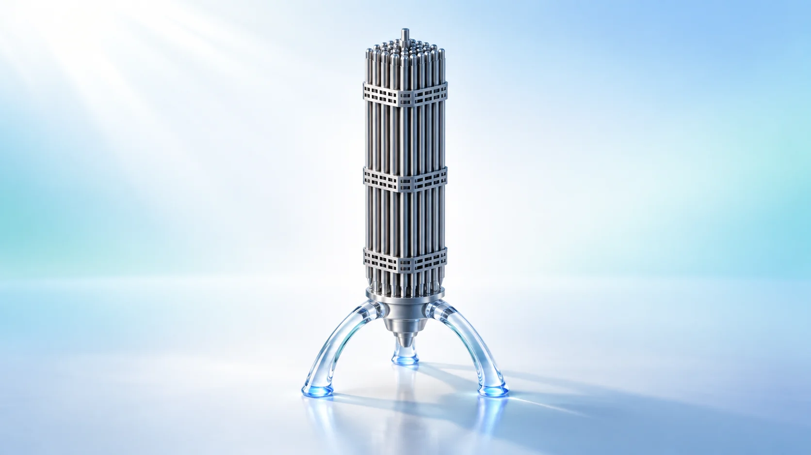
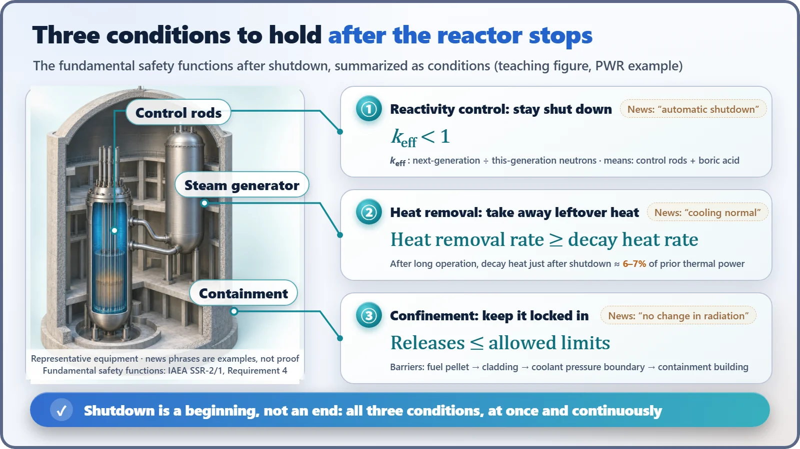

Safety Principles & Accident Analysis · 215
Three Jobs Left After the Campfire Is Out — The Three Safety Functions After Reactor Shutdown
Behind 'shut down, cooling normal, no change in radiation' lies a three-part checklist that must hold together long after the reactor stops.

Shutting down a reactor is a beginning, not an end. Three fundamental safety functions must keep being met: control of reactivity (keep the chain reaction below criticality, keff < 1), removal of heat (take away at least as much heat as decay heat produces), and confinement of radioactive material (keep the barriers intact). The three are interlocked, so pushing one too hard, as with overcooling, can shake another.
A checklist hidden in one sentence
Whenever a nuclear plant stops because of an earthquake or an equipment problem, the news report tends to come with the same sentence: "The reactor shut down automatically, cooling is being maintained normally, and there has been no change in radiation levels outside."
It's an easy sentence to let slide by, but it's actually a tightly packed checklist. Is the reactor staying shut down? Is the heat getting out? Is the radioactive material staying where it belongs? These are exactly the items that nuclear safety calls the three safety functions after reactor shutdown.
Why you can't walk away once the fire is out
Think about putting out a campfire before leaving a campsite. The flames dying down isn't the end of it. You make sure the wind can't revive the embers, you pour water on the hot coals to cool them, and you cover the ashes with soil so sparks don't blow around.
A reactor needs the same three things looked after. The International Atomic Energy Agency (IAEA) safety standard for design calls them the fundamental safety functions and sums them up like this:[1]
- Control of reactivity: hold the chain reaction down so it doesn't come back to life
- Removal of heat: draw heat away from the reactor and the spent fuel pool
- Confinement of radioactive material: keep radioactive material contained, shield against radiation, and manage how much gets out
Interestingly, the requirement says these must be met "in all plant states." They are functions maintained at all times, even in normal operation, but they become especially important when things change fast, as they do right after the reactor stops.
First: keep the stopped reactor stopped
Reactivity is the chain reaction's urge to grow. Expressed as a single number, it's the effective multiplication factor: the ratio of how many neutrons one generation leaves for the next. When this value is below 1, the chain reaction dies away on its own.
When a pressurized water reactor receives a shutdown signal, it drops neutron-absorbing control rods in from above by gravity. After that, boric acid, another neutron absorber, is dissolved in the cooling water to keep the reactor shut down for the long term. At the design stage, engineers leave enough shutdown margin that the reactor stays shut down even if they assume that "the single most powerful control rod got stuck and didn't go in."[4]

Second: draw off the heat that stays even when it's off
Even when the chain reaction stops, the fission leftovers in the fuel (fission products) keep undergoing radioactive decay and giving off heat. Right after shutdown, this decay heat is about 6–7% of the thermal power before shutdown. Doesn't sound like much? But for a reactor with a thermal power of about 3,000 megawatts, that's around 180 to 210 megawatts. If cooling stopped, heat enough to slowly boil away the water in the reactor would keep coming, with no switch to turn it off.
So the condition is simple: the heat removed every second must be greater than or equal to the decay heat produced every second. A pressurized water reactor first passes the heat to the steam generators and sends it out as steam; once temperature and pressure are low enough, it switches to the residual heat removal system to keep cooling. Note that this function isn't only about the reactor. The spent fuel pool, which cools fuel taken out of the reactor, is on the same list.[1]
Third: keep what's locked in, locked in
The radioactive material inside the fuel is still there after the reactor stops. Multiple barriers, the fuel pellet and cladding, the pressure boundary through which the coolant flows, and the containment building, hold this material in, layer upon layer. The third function is keeping those barriers intact. In the control room, numbers such as the pressure inside containment and the readings of radiation monitors confirm whether this function is being met. The "no change in radiation levels outside" in the news is a short way of reporting one of the results for this item.
Where the campfire analogy breaks down
Here one analogy needs correcting. With a campfire, the more water you pour on, the less you worry about it flaring up again. A reactor is different.
In a light water reactor, colder cooling water usually becomes denser, slows neutrons down better, and so raises the reactivity. That means if you take heat away too fast and too much, the shutdown margin shrinks, and if the margin runs short, the stopped reactor can approach criticality again. That's why designers separately analyze accidents in which a steam line breaks and steam rushes out all at once.[4] The right answer for cooling is not "a lot" but "enough, at a controlled rate."
In this way the three functions are interlocked. If heat isn't removed, it builds up, the fuel overheats and the barriers come under pressure. Conversely, if the pressure boundary leaks, coolant escapes and heat removal gets harder. And if the reactor goes critical again, fission heat is added and the cooling burden grows. A problem in one function immediately becomes a burden on another, and heat removal sits right at the center.
![Three interlocked steel rings labeled heat removal, reactivity control and confinement, with arrows and four cards: overcooling raises reactivity and shrinks shutdown margin, recriticality adds fission heat and cooling burden, cooling failure builds up heat and overheats fuel loading the barriers, and a pressure boundary leak loses coolant; below, six critical safety functions in priority order: subcriticality, core cooling, heat sink, RCS integrity, containment and inventory, with a green-yellow-orange-red status scale](../../assets/images/theory/215-three-safety-functions-after-shutdown/fig2-interlocked-safety-functions.webp)
How the control room keeps watch on these three
So when the reactor stops, operators break these functions down and keep watching them. In the emergency operating procedures of Westinghouse-type pressurized water reactors, for example, they check six critical safety functions in priority order: subcriticality, core cooling, a place to send the heat (the heat sink), the integrity of the reactor coolant system, containment, and coolant inventory.[2]
Each item shows its status as green, yellow, orange or red, and when red appears, the procedure to restore that function comes before anything else.[3] The list grew to six, but take it apart and it's really the three pillars of reactivity, heat and confinement cut into smaller pieces.
| Fundamental safety function (IAEA) | Critical safety functions watched by operators (ERG example) |
|---|---|
| Control of reactivity | Subcriticality |
| Removal of heat | Core cooling, heat sink, inventory |
| Confinement of radioactive material | Reactor coolant system integrity, containment |
One more distinction is worth making. A safety function is a "goal to be achieved"; a safety system is the "means" of achieving it. A single emergency injection system that adds borated water can help with reactivity control and cooling at the same time, and several systems can overlap to cover one function.
Rereading the one-sentence checklist
- Shutting down the reactor is a beginning, not an end. Even after it stops, reactivity control, heat removal and confinement of radioactive material are still needed.
- The three functions are interlocked, so pushing one too hard, as with overcooling, can shake another.
- Operators split them into six critical safety functions and watch them in priority order.
The next time you hear "automatic shutdown, cooling normal, no change in radiation," remember that it's a one-line summary of the results of checking the three safety functions.